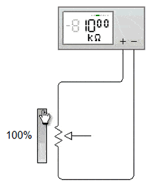
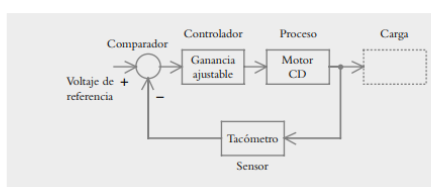
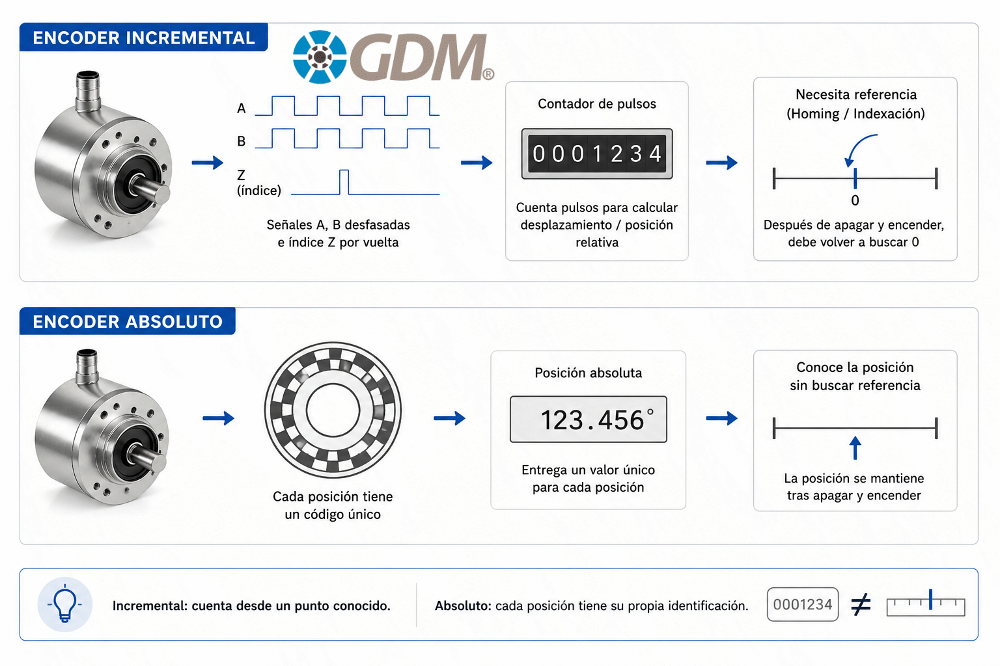
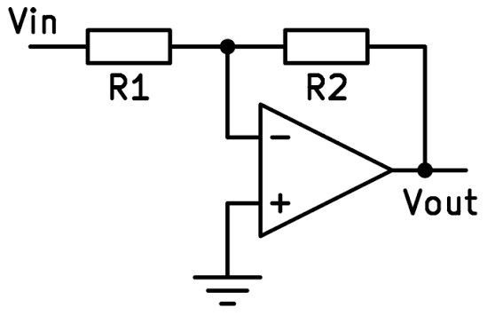

1. Potenciómetros
1.1 Definición
Un potenciómetro es una resistencia variable de tres terminales con un contacto deslizante (cursor o wiper). Funciona como un divisor de tensión ajustable. Se usa ampliamente como sensor de posición angular o lineal en lazos de control.
1.2 Principio de funcionamiento
Sea Vin la tensión aplicada entre los extremos de la resistencia total Rp. Si el cursor está a una fracción x (0 ≤ x ≤ 1) de recorrido, la tensión de salida es:
La función de transferencia estática respecto al ángulo θ es:
Donde Kp es la ganancia del sensor (sensibilidad).
1.3 Tipos
| Tipo | Ley | Aplicación |
|---|---|---|
| Lineal (B) | R(x) = Rp·x | Sensores de posición |
| Logarítmica (A) | R(x) = Rp·10kx | Audio (volumen) |
| Antilogarítmica (C) | R(x) = Rp·10-kx | Compensación |
1.4 Modelo en lazo de control
En un sistema de control de posición, el potenciómetro actúa como transductor de realimentación. Si se usa en un puente de Wheatstone o como divisor, su función de transferencia dinámica es prácticamente estática (ancho de banda muy alto, sin retardo significativo).

1.5 Ejercicios resueltos
Ejercicio 1.1 Básico
Un potenciómetro lineal de 10 kΩ se conecta a Vin = 12 V. Si el cursor está al 35 % del recorrido, ¿cuál es Vout? ¿Cuál es la ganancia del sensor Kp si el recorrido total es 300°?
Ejercicio 1.2 Control
En un lazo de control de posición, el potenciómetro de realimentación tiene θmax = 360° y Vref = 10 V. La referencia deseada es θd = 90°. Calcule: (a) la tensión de referencia Vref,d; (b) el error de tensión si la salida real está a 85°.
2. Tacómetros
2.1 Definición
Un tacómetro es un sensor que mide la velocidad angular (ω) de un eje. Su salida puede ser analógica (tensión proporcional a ω) o digital (pulsos).
2.2 Tacómetro de CC (generador tacométrico)
Es una máquina de CC pequeña que funciona como generador. La tensión inducida es proporcional a la velocidad:
Su función de transferencia ideal:
En la práctica tiene un polo por la constante de tiempo eléctrica τ = L/R:
2.3 Tacómetro digital (óptico / magnético)
Genera N pulsos por revolución. La frecuencia de salida es:
Y la tensión tras un conversor F/V:
2.4 Aplicación en lazos de control
El tacómetro se usa como realimentación de velocidad (control tipo proporcional-derivativo). En un motor de CC:
El tacómetro introduce una realimentación que aumenta el amortiguamiento y reduce el sobreimpulso.

Lazo de control de velocidad con tacómetro como realimentación
2.5 Ejercicios resueltos
Ejercicio 2.1 Básico
Un tacómetro de CC tiene Ke = 0.05 V·s/rad. Si el eje gira a 1500 rpm, ¿cuál es la tensión de salida?
Ejercicio 2.2 Control
Un motor de CC tiene función de transferencia G(s) = 10/[(s+1)(s+2)] con realimentación unitaria. Se añade un tacómetro con ganancia Kt en realimentación (realimentación de velocidad). Determine Kt para obtener un factor de amortiguamiento ζ = 0.7.
Ejercicio 2.3 Avanzado
Un tacómetro óptico tiene N = 60 ranuras. Si se mide una frecuencia de salida de 2.4 kHz, ¿cuál es la velocidad angular en rpm?
3. Encoders
3.1 Definición
Un encoder es un sensor digital que convierte movimiento angular o lineal en pulsos digitales. Es el sensor de posición/velocidad más usado en control moderno.
3.2 Tipos
| Tipo | Salida | Resolución | Uso |
|---|---|---|---|
| Incremental | Pulsos A, B, Z | N pulsos/vuelta | Velocidad, posición relativa |
| Absoluto | Código binario/Gray | 2n posiciones | Posición absoluta |
| Cuadratura | A, B desfasados 90° | 4×N cuentas | Dirección + velocidad |
3.3 Resolución y ganancia
Resolución angular por pulso:
Con decodificación en cuadratura (x4):
Ganancia del encoder (pulsos por radián):
3.4 Cálculo de velocidad por encoder
Método M (frecuencia): contar pulsos en tiempo fijo T:
Método T (periodo): medir tiempo entre pulsos:
Método M/T (combinado): para amplio rango de velocidades.
3.5 Función de transferencia en control
El encoder es un sensor discreto. Su modelo en el lazo es un cuantizador. La ganancia equivalente:
Introduce un retardo de muestreo: e−sT ≈ 1/(1 + sT) para T pequeño.

Encoder óptico incremental
3.6 Ejercicios resueltos
Ejercicio 3.1 Básico
Un encoder incremental tiene N = 1024 pulsos/vuelta. Determine: (a) resolución angular; (b) ganancia Kenc en pulsos/rad; (c) resolución con decodificación x4.
Ejercicio 3.2 Control
Un encoder de 500 pulsos/vuelta se usa para medir velocidad por el método M con T = 100 ms. Si en ese tiempo se cuentan 250 pulsos, ¿cuál es la velocidad en rpm?
Ejercicio 3.3 Avanzado
Un encoder de 2000 pulsos/vuelta con decodificación x4 se usa en un lazo de control de posición. Si el controlador recibe 12,000 cuentas, ¿a qué ángulo corresponde?
Ejercicio 3.4 Control Avanzado
Un motor con encoder de 1000 ppr (x4 = 4000 cuentas/vuelta) se muestrea a Ts = 1 ms. Determine la ganancia del sensor en cuentas/rad·s si se usa como tacómetro digital (frecuencia).
4. Amplificadores Operacionales
4.1 Definición
El amplificador operacional (op-amp) es un amplificador diferencial de alta ganancia con dos entradas (inversora y no inversora) y una salida. Es la base de la instrumentación en sistemas de control.
4.2 Características ideales
| Parámetro | Ideal | Real (LM741) |
|---|---|---|
| Ganancia Aol | ∞ | 2×10⁵ |
| Impedancia entrada | ∞ | 2 MΩ |
| Impedancia salida | 0 | 75 Ω |
| Ancho de banda | ∞ | 1 MHz |
4.3 Configuraciones básicas
a) Inversor
b) No inversor
c) Seguidor de tensión
d) Sumador inversor
e) Diferenciador
f) Integrador
4.4 Función de transferencia dinámica
Un op-amp real tiene un polo dominante. Su ganancia en lazo abierto:
Donde ωt = A0·ωp es el producto ganancia-ancho de banda (GBW).
4.5 Aplicación en control: PID con op-amps
Un controlador PID analógico se puede implementar con 2-3 op-amps. La función de transferencia:

Amplificador inversor básico
4.6 Ejercicios resueltos
Ejercicio 4.1 Básico
Diseñe un amplificador inversor con ganancia −10. Si Rin = 1 kΩ, ¿cuál es Rf? Si Vin = 0.5 V, ¿Vout?
Ejercicio 4.2 Control
Se desea un controlador proporcional con ganancia Kp = 5 usando un op-amp no inversor. Si Rin = 2 kΩ, calcule Rf.
Ejercicio 4.3 Avanzado
Un op-amp tiene GBW = 1 MHz y A0 = 10⁵. Determine: (a) ωp; (b) ancho de banda en lazo cerrado si G = 100; (c) ganancia a 100 kHz en lazo abierto.
Ejercicio 4.4 Aplicado
Diseñe un integrador con R = 10 kΩ y C = 1 μF. Si Vin = 2 V constante durante 5 ms, ¿cuál es Vout?
5. Sistemas de Control: Ganancia y Funcionamiento
5.1 Conceptos fundamentales
En un lazo de control cerrado, la ganancia total determina la respuesta del sistema. Para un lazo con realimentación H(s):
Donde G(s) es la planta + controlador y H(s) es el sensor (potenciómetro, tacómetro, encoder).
5.2 Ganancia de sensores
| Sensor | Ganancia | Unidades | Función de transferencia |
|---|---|---|---|
| Potenciómetro | Kp = Vin/θmax | V/rad | Kp |
| Tacómetro CC | Ke | V·s/rad | Ke/(τs+1) |
| Encoder (posición) | Kenc = N/2π | pulsos/rad | Kenc·e−sT |
| Encoder (velocidad) | Kv = Kenc·Ts | cuentas/(rad/s) | Kv/(1+sTs) |
5.3 Efecto de la ganancia en la respuesta
- Ganancia alta: menor error en estado estable, pero mayor sobreimpulso y posible inestabilidad.
- Ganancia baja: sistema estable pero error en estado estable grande.
- Ganancia crítica: límite de estabilidad (margen de ganancia).
5.4 Ejemplo integrador: control de posición con encoder
Sistema: Motor + encoder + controlador P.
5.5 Ejercicios de control integradores
Ejercicio 5.1 Integrador
Un motor de CC tiene G(s) = 5/[s(s+2)]. Se realimenta con un potenciómetro de ganancia Kp = 0.5 V/rad y un controlador proporcional Kc. Determine Kc para que el sistema tenga ζ = 0.6.
Ejercicio 5.2 Integrador
Con el sistema anterior, calcule el error en estado estable para una entrada escalón unitario con Kc = 1.111.
Ejercicio 5.3 Tacómetro
Un motor con G(s) = 10/[s(s+1)] se controla con realimentación de velocidad usando un tacómetro Kt = 0.2 V·s/rad. La referencia es velocidad. Determine la función de transferencia de lazo cerrado y el error en estado estable para entrada escalón.
Ejercicio 5.4 Encoder
Un encoder de 2000 ppr (x4) se usa para medir posición. El controlador tiene Kc = 2 V/cuenta. Si la planta es G(s) = 100/[s(s+5)], determine la ganancia de lazo y el error de posición.
Ejercicio 5.5 Integrador Total
Diseñe un controlador PID con op-amps para el sistema G(s) = 4/[s(s+2)] con realimentación unitaria, de modo que ζ = 0.7 y ωn = 5 rad/s. Determine Kp, Ki, Kd.
5.6 Resumen comparativo
| Sensor | Tipo | Ganancia | Ventaja | Desventaja |
|---|---|---|---|---|
| Potenciómetro | Analógico | V/rad | Simple, económico | Desgaste, ruido |
| Tacómetro CC | Analógico | V·s/rad | Salida directa de ω | Escobillas, mantenimiento |
| Encoder incr. | Digital | pulsos/rad | Alta precisión | Necesita contador |
| Encoder abs. | Digital | 2ⁿ pos. | Posición absoluta | Más costoso |